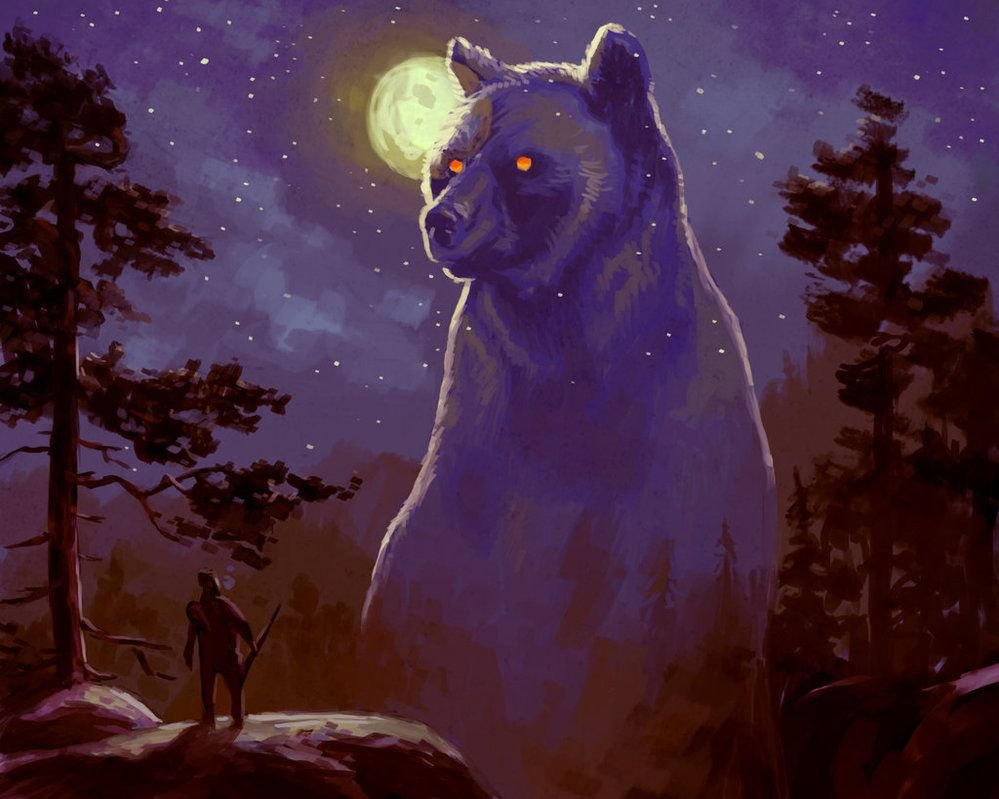
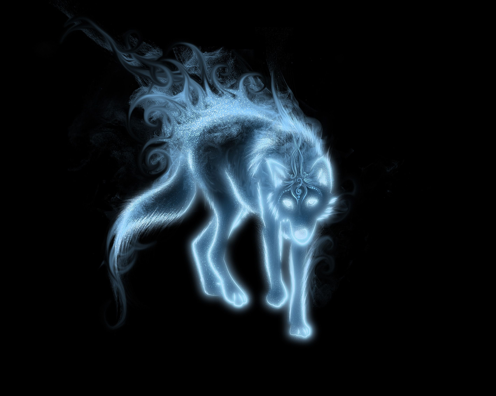
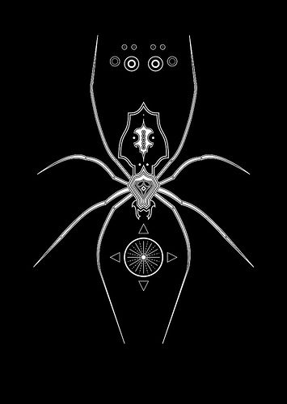

Тотем Медведя: Сила, Внутренняя Энергия, Перерождения(принятие нового), Любовь и Защита своих и своего Вы могли подумать какая любовь у дикого зверя который может разорвать вас пополам. Матери медведей одни из самых жестоких и жертвенных матерей... изредка они готовы идти против 2 самцов, любовь медведя по истине не ведает предела. Медведи защищают своих и подобно циклу года перерождаются каждый год, сохраняя энергию, не просыпаясь как студенты))). И конечно же все наслышаны и силе медведя. Не даром чаще всего мы вспоминаем именно Берсерков а не Ульфхеднаров к примеру, один берет все силой, второй ловкостью.

Лиса, как тотемный символ, обладает множеством значений и ассоциаций, которые отражают ее характерные черты и способности. Во многих культурах лиса ассоциируется с хитростью, наблюдательностью и интеллектом. Она часто воспринимается как символ умения адаптироваться к изменяющимся обстоятельствам и находить самые эффективные пути решения проблем. В западной культуре лиса также может быть символом женской силы и волшебства, а также свободы и независимости. Тотем лисы может быть источником вдохновения и поддержки в повседневной жизни. Он может помочь нам развить наши способности к наблюдательности и интуиции, а также научить нас быть более гибкими и творческими в различных ситуациях. Лиса также может служить напоминанием о необходимости быть осторожным и осмотрительным, чтобы избежать неприятностей. В целом, тотем лисы является мощным символом, который вдохновляет нас к развитию наших умственных и интуитивных способностей и помогает нам приспособиться к переменам в жизни.
Для многих древних культур змея символизировала мудрость, загадки и непостижимую силу. Змея также ассоциировалась с лечением, энергией и целительскими способностями. Обладание тотемом змеи позволяет своему носителю взглянуть внутрь себя и обрести глубокое самопознание. Этот тотем также может помочь в развитии интуиции и мистических способностей. При наличии тотема змеи, его обладатель получает защиту от негативных энергий и отводит от себя недоброжелателей. Благодаря символической связи с змеей, человек взращивает в себе не только уверенность и смелость, но и способность к преобразованию и адаптации. Тотем змеи направляет своего обладателя на путь личностного роста и раскрытия потенциала. Будучи глубоким символом преображения и трансформации, змея помогает человеку справиться с жизненными изменениями и обрести новые возможности.
Волк символизирует силу, лидерство, преданность и справедливость. Этот тотем часто ассоциируется с теми, кто обладает высокой интуицией, силой духа и умением вести коллектив. Волк является символом семейной связи и защитником территории. Он испытывает верность своей стае, уделяет внимание каждому ее члену и заботится о безопасности всех. Эти качества делают волка признанным символом лидерства. Тотем волка вдохновляет нас быть сильными и уверенными в себе, готовыми отстоять свои принципы и защитить тех, кто зависит от нас. Также волк является символом справедливости, поскольку он никогда не судит по внешности, а оценивает каждого индивида по его поступкам и поведению. Тем самым волк нас объединяет и научает быть терпимыми и открытыми для разных культур и точек зрения.

К воронам во многих народах относились по разному у кого-то он был символом светлого у кого-то темного а некоторые относились к ним двояко. Чёрные птицы-падальщики которые кружат над полями боя и в свою очередь птицы-хищники убивающие более мелких птиц и земную живность. Вороны во многом наделены хитростью и изворотливостью, как говорили индейцы. Также вороны птица битвы, шпионы и сказатель мудрости как считали Скандинавы. Хугин и Муним (мысль и память) облетавшие все 9 миров после чего садились на плечи Всеотцу и шептали ему все что узнали. Но у всего есть и темная сторона. Индусы верили что ворон это вестник смерти Кельтская богиня смерти Морриган также принимала личину вороны Вспомним Тауэрских воронов и повирие которое гласит. Коли улетят черны птицы из Тауэра, крах империи Британской придёт. Но что в итоге. Вороны посланники... посланники наделённые тайным знанием, птица знамения, готовая помочь или же навредить. Всякий кто носит этот тотем обладает знанием и мудростью, способный делать как хорошие так и ужасные дела, но великие и мудростью.
Тотем паука - один из самых интересных и значимых символов в мифологии различных культур. Паук, воплощающий в себе некоторые особенности этого существа, часто ассоциируется с тайной, творчеством и связью с духовным миром. В одной из многих культур паук был рассмотрен как выражение божественной силы. В ацтекской мифологии, например, Брат-паук (Тлалоц) символизировал преобразование и провождение дождя. Ацтеки считали, что паук был связан с богом Тлалоком, который даровал им необходимую влагу для урожая. В их представлении, паучьи нити соединяли небеса и землю, обеспечивая гармонию и равновесие в мире.
